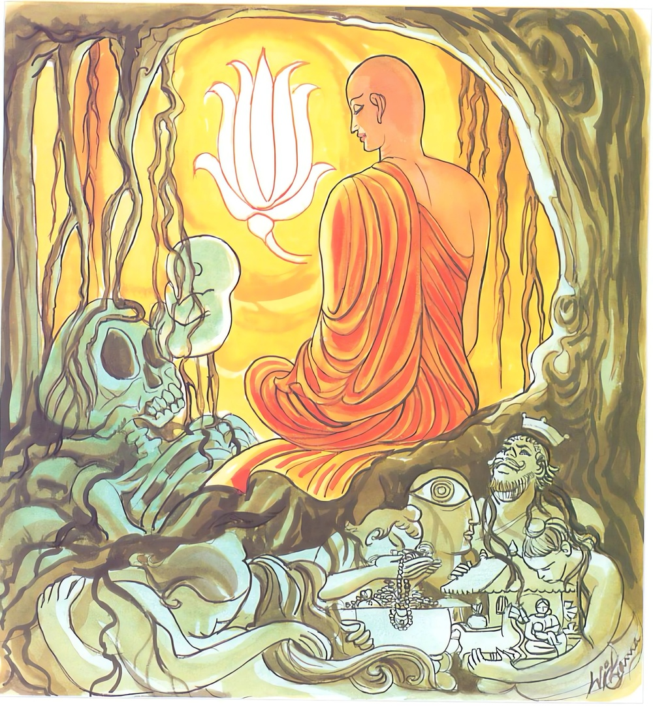

26-38 ධම්ම දින්නා තෙරණියගේ කථා පුවත
මෙම කතාව සද්ධර්ම සාගරයෙන් ද කියවන්න.
යස්ස පුරෙ ච පච්ඡා ච මජ්ඣෙ ච නත්ථි කිඤ්චනං
අකිඤ්චනං අනාදානං තමහං බ්රූමි බ්රාහ්මණං.
යම් පුද්ගලයකු විෂයයෙහි අතීත ස්කන්ධයන් පිළිබඳ වූ ද අනාගත ස්කන්ධයන් පිළිබඳ වූ ද, වර්තමාන ස්කන්ධයන් පිළිබඳ වූ ද, (තෘෂණාග්රහණ සඞ්ඛ්යාත) පළිබෝධයෙක් නැද් ද, රාගාදි කිඤ්චන රහිත වූ තෘෂ්ණා දෘෂ්ටි මාන ග්රහණයක් නැති ඒ වීතරාග පුද්ගලයා බ්රාහ්මණයැ යි මම් කියමි.

"යස්සාති” යන මේ ධර්ම දේශනය ශාස්තෲන් වහන්සේ වේළුවනාරාමයේ වැඩසිටිය දී ධම්ම දින්නා භික්ෂුණීය නිමිති කරගෙන දේශනාකළහ.
එක් දිනක් ධම්ම දින්නා භික්ෂුණීයගේ ගිහිකල ස්වාමීයා වූ විසාඛ උපාසකයා බුදුගෙන් බණ අසා අනාගාමී ඵලයට පත්වී මෙසේ සිතුවේය. මවිසින් සියළු ධනය ධම්ම දින්නාට පැවරිය යුතුය. එතුමා පෙරාතුව එනවිට ජනේලයෙන් බලාසිටින ධම්ම දින්නා සිනා පහළ කරයි. එනමුත් එදින ඔහු ජනේලයෙන් බලාසිටින ඇය දෙස නොබැලුවේය. මේ කුමක් වීදැයි සිතා හොඳයි කෑම ගන්නා විට දැනගතිමියි කෑම අවස්ථාවේදී බත් බෙදුවාය. ඔහු අනෙක් දිනවල එන්න එකට කෑම ගනිමුයි කථාකරයි. මෙදින නිහඩවම කෑම ගත්තේය. ඇය කිසියම් කරුණකට කෝප වී ඇතැයි සිතුවාය. අනතුරුව විසාඛ පහසුවෙන් සිටින විට ධම්ම දින්නා කථාකොට මේ ගෙයි සියළු සම්පත් ඔබම බාර ගන්නැයි පැවසුවේය. ඇය තරහ වී නම් මෙසේ සම්පත් පවරා නොදෙයි මේ කුමක්දැයි විමසා ස්වාමීනි ඔබ මම මෙයින් පසු කිසිවක් නො විමසන්නේද ඔබ විසින් විසිකරන ලද කෙල මෙන් ඇතිකල මගේ පැවිද්ද අනුමත කරන්න. ඔහු ද මැනවැයි පිළිගෙන මහත් සත්කාරයෙන් භික්ෂුණී ආරාමයට ගෙන ගොස් පැවිදි කළේය. ඇය උපසම්පදාව ලබා ධම්ම දින්නා ථෙරි නම් වූවාය ඇය විවේකය කැමතිව භික්ෂුණීන් සමග ජනපදයට ගොස් එහි වාසය කරන්නී නොබෝ දිනකින් සිවුපිළිසිඹියා රහත් බවට පත්වූවාය. නැවත ඇය මා නිසා ඥාතීන් පින් කරන්නේයයි නැවත ද රජගහ නුවරට ආපසු ගියාය. උපාසක ඇය පැමිණි බව අසා කුමක් නිසා ආවේදැයි භික්ෂුනී ආරාමයට ගොස් තෙරණියට වැද එකත් පසෙක සිට ආර්යාවනි ඇසීමට නුසුදුසු ප්රශ්නයක් මම අසමි. ඔබ කළකිරීමට පත්වූයේද? යනුවෙන් ඇසීමට ගොස් සෝවාන් මාර්ගය පිළිබඳව ප්රශ්න කළේය ඇය එම ප්රශ්න විසඳුවේය. උපාසක ඒ පිළිවෙලට අනෙක් මාර්ග පිළිබඳවද ප්රශ්න අසා ඉක්ම ගිය ප්රශ්න විමසූවිට ඉක්මවා ගියේයයි ඇවැත්නි විසාඛ බුදුන්ගෙන් මේ ප්රශ්න අසන්නැයි කී විට තෙරණිය වැඳ නැගිට බුදුන් වෙත ගොස් ඒ කථා සල්ලාපය සියල්ල බුදුන්ට දැනුම් දුන්හ. බුදුහු මැනවින් ඇය කියා තිබේ මගේ දියණිය ධම්ම දින්නා මගෙන් ප්රශ්න ඇසුවිටද පිළිතුරු දෙන ආකාරයටම ඇය ප්රශ්න විසඳා තිබේ. යයි පවසමින් මේ ගාථාව පැවසුහ.
පෙර පසුද මැද යන
තුන් තන්හි පස් කඳ ගැන
ආසා කිසිත් නැති
රාග තන් හා සිතින් දුරුකළ
හැඟුම නැති මම මගේ
උතුමෝ බමුණු වේ මැයි.
යමෙකුට අතීතයේ ස්ඛන්ධ පිළිබඳව ද අනාගත ස්ඛන්ධයන්හි ද වර්තමාන ස්ඛන්ධයන්හි ද කරදර පළිබෝධයක් නැත්ද රාගාදි කිඤ්චන නැති තෘෂ්ණාදි වශයෙන් ග්රහණයක් නැති ඔහු බ්රාහ්මණ යයි මම කියමි.
එහි පුරෙ අතීත ස්ඛන්ධ පිළිබඳව ද. පචඡා අනාගත ස්ඛන්ධ පිළිබඳව ද, මජෙඣ වර්තමාන ස්ඛන්ධ පිළිබදව ද, කිඤචනං - යමෙකුට ඒ ඒ තන්හි තණ්හා සංඛ්යාත වූ කිසිවක්, නත්ථි රාගාදී කිසිත් නැත්ද. අකිඤචනං - කිසිදු ග්රහණයක් නැත්තේ ද, අනාදානං, බ්රාහමණං - බ්රාහ්මණයෙකැයි කියමි.
දේශනාවසානයේ බොහෝ දෙන මාර්ග ඵලවලට පැමිණියාහුය.